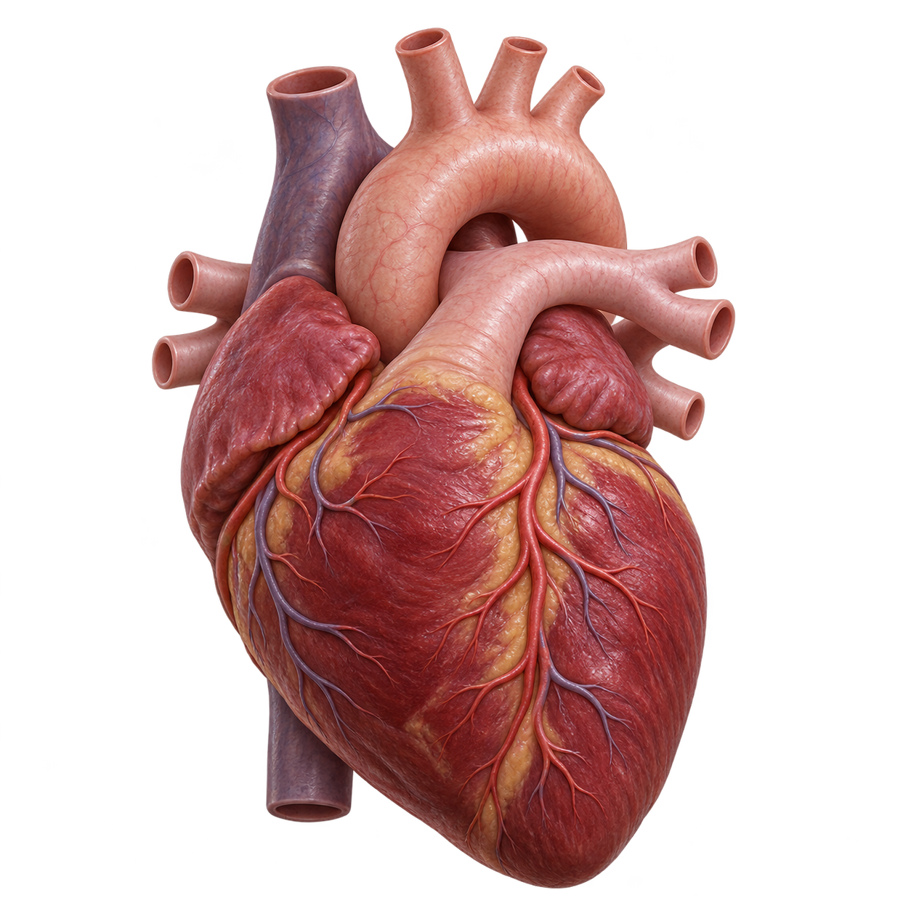
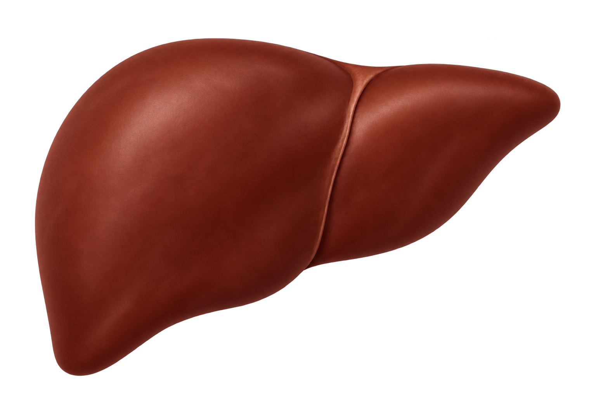
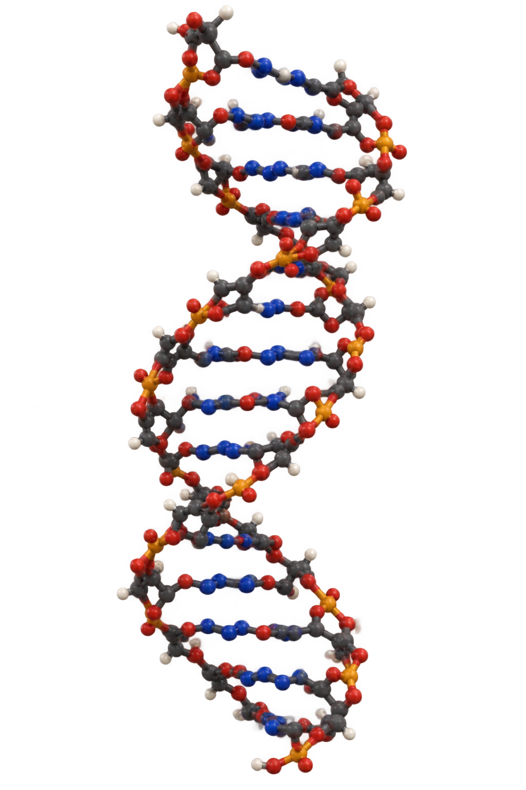

Corazón · Imagen elegida
Alimentación y salud cardiometabólica
Las publicaciones de la Cohorte han analizado cómo se relacionan el consumo de bebidas, los patrones alimentarios, la presión arterial y los indicadores metabólicos.

Corazón e hígado con colores naturales y volumen suave. Cuerpo y cerebro conservan su malla tridimensional. Todas las imágenes tienen fondo transparente.
Corazón · Imagen elegida
Las publicaciones de la Cohorte han analizado cómo se relacionan el consumo de bebidas, los patrones alimentarios, la presión arterial y los indicadores metabólicos.

Composición corporal · Malla tridimensional
El seguimiento permite estudiar la relación temporal entre la adiposidad, los estilos de vida y los indicadores de resistencia a la insulina.

Cerebro · Malla en vista superior
La investigación también aborda los síntomas depresivos y su relación con la actividad física, la alimentación y experiencias del entorno personal.
Hígado · Sin vesícula
La información de la Cohorte ha permitido investigar herramientas no invasivas para evaluar el riesgo de fibrosis hepática a partir de mediciones clínicas y bioquímicas.

ADN · Nueva propuesta molecular
En subgrupos de participantes se han estudiado variantes genéticas, composición de la microbiota y su relación con la salud metabólica.
